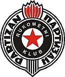
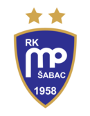

Histoire de la Ligue des Champions de Handball
Les Débuts (1957-1993)
À ses débuts en 1957, la Coupe des Champions Européens était une compétition révolutionnaire pour le handball. L'idée était de rassembler les champions nationaux des différentes fédérations européennes dans un tournoi pour déterminer le meilleur club de handball d'Europe.
Contexte et Création
La motivation derrière la création de la Coupe des Champions Européens était multiple et profondément ancrée dans la dynamique sportive de l'époque.
Contexte Sportif et Social
Dans les années 1950, après la Seconde Guerre mondiale, l'Europe était en pleine reconstruction, tant sur le plan économique que culturel. Le sport, et en particulier le handball, jouait un rôle clé dans le renforcement des liens entre les nations et dans la promotion de la paix et de la coopération internationale. Le handball était déjà bien implanté dans de nombreux pays, notamment en Europe de l'Est, en Allemagne et dans les pays scandinaves. Cependant, les compétitions de clubs étaient majoritairement limitées aux championnats nationaux.
Besoin d'une Compétition Continentale
Les championnats nationaux, bien que compétitifs, ne permettaient pas aux clubs de se mesurer aux autres équipes européennes de manière régulière. Une compétition continentale offrirait non seulement une vitrine pour le talent local, mais permettrait aussi aux clubs de handball de s'améliorer en affrontant des adversaires de différentes écoles de jeu et traditions. Cela stimulerait le niveau global du handball en Europe.
Organisation et Premier Tournoi
L'organisation de la première édition de la Coupe des Champions Européens a demandé une coordination significative entre les différentes fédérations nationales de handball. Le tournoi inaugural a rassemblé les champions nationaux de plusieurs pays européens, créant ainsi une plateforme où les meilleures équipes pouvaient s'affronter. Cette compétition était innovante car elle utilisait un format d'élimination directe, ce qui ajoutait une intensité et une pression supplémentaires à chaque match, captivant ainsi l'intérêt des supporters et des médias.
Impact et Héritage
L'impact de cette première compétition a été immédiat et durable. Elle a non seulement rehaussé le profil du handball en Europe, mais a également inspiré la création de compétitions similaires dans d'autres sports. Les équipes participantes ont pu échanger des tactiques et des styles de jeu, enrichissant ainsi le répertoire technique du handball européen. De plus, le succès de cette compétition a prouvé la viabilité et l'intérêt des tournois continentaux, ouvrant la voie à l'évolution future de la Ligue des Champions de Handball.
La Coupe des Champions Européens a donc été une initiative visionnaire qui a permis de promouvoir le handball à une échelle internationale, en offrant aux meilleurs clubs une plateforme pour s'affronter et se mesurer au niveau continental. Cette compétition a joué un rôle fondamental dans le développement et la popularisation du handball tel que nous le connaissons aujourd'hui.
Format Original de la Coupe des Champions Européens
Élimination Directe
Le cœur de la compétition reposait sur un format à élimination directe, un choix qui ajoutait une intensité et une tension particulières à chaque match. Dans ce système, les clubs participants étaient immédiatement confrontés à des rencontres décisives dès le premier tour. L'équipe perdante était directement éliminée de la compétition, ce qui signifiait qu'il n'y avait pas de seconde chance. Ce format garantissait que chaque match était crucial et pouvait souvent tourner au drame, car une erreur ou un mauvais jour pouvait signifier la fin du parcours pour une équipe.
Match Aller-Retour
Pour rendre les rencontres plus justes et équilibrées, chaque confrontation se déroulait en deux manches : une à domicile et une à l'extérieur. Les équipes jouaient donc des matchs aller-retour pour chaque tour. Le score total des deux matchs déterminait quelle équipe avançait au tour suivant. Ce format combinait les avantages du jeu à domicile, où une équipe pouvait bénéficier du soutien de ses fans, avec la difficulté des matchs à l'extérieur, où elle devait faire face à des conditions moins familières.
1. Avantages du Match Aller-Retour:
Equite :Le format aller-retour permettait de compenser les avantages et les inconvénients de jouer à domicile ou à l'extérieur.
Stratégie :
Les équipes devaient planifier leur stratégie sur deux matchs, ce qui ajoutait une couche supplémentaire de préparation et de tactique.
Suspense et Drame
Avec deux matchs pour décider du vainqueur, le suspense était souvent maintenu jusqu'au coup de sifflet final du match retour.
2. Calcul du Score Total:
Score cumulé
Le vainqueur était déterminé par le score cumulé des deux matchs. Par exemple, si une équipe gagnait le match aller 2-1 mais perdait le match retour 0-1, le score cumulé serait de 2-2, avec l'équipe ayant marqué plus de buts à l'extérieur passant au tour suivant, une règle souvent appliquée pour départager les équipes.
Ce format de compétition, bien qu'éprouvant, était aussi particulièrement apprécié pour son intensité et sa capacité à produire des moments mémorables. Les supporters, ainsi que les joueurs, savaient que chaque match pouvait potentiellement être leur dernier dans la compétition, ce qui ajoutait une excitation particulière à chaque rencontre.
Ce format a évolué avec le temps, mais les principes de base de l'élimination directe et des matchs aller-retour ont laissé une empreinte durable sur la façon dont les compétitions de handball sont organisées aujourd'hui.
2. Une domination des clubs de l’Est de l’Europe (1957-1980)
De 1957 à 1980, la domination des clubs d'Europe de l'Est, notamment ceux de l'ex-Yougoslavie et de l'Union Soviétique, dans la Coupe des clubs champions européens (ancien nom de la Ligue des Champions) était incontestable. Ces équipes profitaient d'une structure sportive centralisée, d'un soutien étatique solide et d’une préparation physique avancée, des atouts qui leur ont permis de dominer la compétition européenne. Le système sportif de l'Est, particulièrement développé et soutenu par les gouvernements, leur offrait des ressources et une organisation qui faisaient défaut à de nombreux clubs d'Europe de l'Ouest à l’époque.
Les premières éditions et l'arrivée des clubs de l'Est
La Coupe des champions européens a été fondée en 1957 et a vu la participation des meilleurs clubs nationaux du continent. Lors de cette première édition, le club danois Virum IF a remporté le trophée, mais la suprématie des clubs d’Europe de l’Est s'est rapidement installée. Dès les années 1960, des clubs de l’Union Soviétique et de la Yougoslavie ont pris les rênes de la compétition. Les clubs des pays de l’Est ont rapidement montré leur domination, non seulement grâce à des talents exceptionnels, mais aussi grâce à des systèmes d'entraînement rigoureux et des moyens financiers et organisationnels souvent plus solides que ceux des clubs d'Europe de l'Ouest.
Le rôle dominant de l'URSS et de l'ex-Yougoslavie
Dynamo Moscou (URSS)
Le Dynamo Moscou, club emblématique de l'Union Soviétique, fut l'une des premières équipes à se distinguer en remportant plusieurs titres dans les années 1960. Le Dynamo Moscou a joué un rôle central dans la consolidation de la domination des clubs soviétiques. Ce club n’était pas seulement puissant en raison de son effectif talentueux, mais aussi grâce à l’approche novatrice qu’il adoptait dans la préparation physique et la gestion de ses joueurs. Le Dynamo a été pionnier dans l'utilisation des technologies d'entraînement et des méthodes scientifiques, développant des stratégies qui l'ont propulsé au sommet du handball européen. La gestion des joueurs, le suivi médical et la préparation physique étaient des éléments essentiels pour ce club, qui bénéficiait de l'aide de l'État pour soutenir ses activités. La forte implication de l'État dans le sport en URSS a permis au Dynamo de disposer de structures de formation et de soutien technique exceptionnelles. Cela a permis au club moscovite de dominer la scène européenne et de remporter de nombreux titres au cours des années 1960 et 1970.
L'autre grande force du handball européen dans cette période était le club Partizan Belgrade (Yougoslavie). Le Partizan a été un acteur majeur dans les années 1960 et 1970, remportant plusieurs titres de la Coupe des champions européens. Le club yougoslave, fondé en 1945, a été l'un des pionniers du handball dans les Balkans et a rapidement trouvé sa place parmi les meilleures équipes européennes. Le Partizan Belgrade a notamment fait preuve d'une grande cohésion d’équipe, avec un jeu collectif impressionnant qui a fait sa réputation. L’équipe était dirigée par des entraîneurs de renom, et ses joueurs bénéficiaient d'une préparation soignée. À la fois sur le plan technique et tactique, le Partizan a brillé dans cette période de domination, remportant la Coupe des champions européens à plusieurs reprises et inscrivant son nom parmi les géants de l'histoire de la compétition.
RK Metaloplastika (Yougoslavie)
Le club Metaloplastika de Sabac, également originaire de Yougoslavie, est un autre exemple de l'excellence des clubs d’Europe de l’Est dans cette période. Metaloplastika a marqué l’histoire de la compétition en 1985, lorsqu'il a remporté son seul titre en Coupe des champions européens. Les années 1980 ont vu un renouveau pour Metaloplastika, qui avait réussi à élever son niveau de jeu au sommet du handball européen. Ce club se distingue par sa gestion des matchs cruciaux et son jeu collectif discipliné. Ce titre en 1985 est un symbole de la domination yougoslave, alors que Metaloplastika a réussi à battre des clubs très puissants et à s'imposer comme une référence en Europe, avec un style de jeu moderne et stratégique.
Les avantages structurels des clubs de l'Est
Les clubs de l’Est de l’Europe, en particulier ceux d’Union Soviétique et de Yougoslavie, bénéficiaient d'un système sportif très organisé et centralisé. Ce modèle était radicalement différent de celui des pays occidentaux, où les clubs étaient souvent privés de soutien étatique direct. En Europe de l’Est, les fédérations sportives étaient souvent gérées par des institutions d'État, ce qui permettait aux clubs de recevoir des financements publics et des infrastructures sportives de haute qualité. Le soutien de l'État à travers des programmes de formation intensifs, les installations modernes, ainsi que les bourses d'études pour les jeunes talents ont permis aux clubs d'Europe de l'Est de créer un vivier de joueurs exceptionnels. Ce soutien étatique a eu un impact profond sur la qualité du handball pratiqué. De jeunes talents étaient recrutés dès leur plus jeune âge, intégrés dans des académies sportives, et entraînés selon des méthodes rigoureuses. En parallèle, ces clubs bénéficiaient de moyens considérables pour préparer leurs joueurs, notamment en matière de préparation physique, nutrition, et technologie d’analyse des performances. Ces atouts leur ont permis de disposer de joueurs plus rapides, plus techniques et mieux préparés que leurs homologues occidentaux, souvent en retard dans ces domaines.
La préparation physique et l'approche scientifique
Une autre clé de la domination des clubs de l’Est était leur approche de la préparation physique et de l’entraînement scientifique. En Union Soviétique et en Yougoslavie, le sport était une affaire d'État et faisait l'objet de recherches approfondies. Des équipes de scientifiques, de médecins du sport et d’entraîneurs spécialisés se consacraient entièrement à l’amélioration des performances des athlètes. Les méthodes utilisées par les clubs d’Europe de l'Est étaient très avancées par rapport à celles des clubs de l’Ouest. Par exemple, les joueurs devaient suivre des programmes de préparation physique rigoureux dès leur adolescence. L’accent était mis non seulement sur l’endurance et la force, mais aussi sur des exercices très spécifiques pour améliorer la coordination, la vitesse et la technique. Cette approche a permis aux clubs de l’Est de se différencier de leurs adversaires et de remporter de nombreux titres européens.
La domination des clubs d’Europe de l’Est sur la Coupe des champions européens entre 1957 et 1980 a été un phénomène marquant de l’histoire du handball. Grâce à une structure sportive centralisée, des moyens financiers considérables et une préparation physique de pointe, les clubs soviétiques et yougoslaves ont su établir un véritable monopole sur la compétition, remportant de nombreux titres. Cependant, cette domination a commencé à s’effriter dans les années 1980, avec l’émergence de clubs d’Europe de l’Ouest de plus en plus compétitifs, notamment en Allemagne et en France. Mais c’est dans cette période que les bases de la grande compétitivité du handball européen moderne ont été posées, notamment grâce à la formidable concurrence entre l’Est et l’Ouest.
3. L'impact de l'Occident et la montée des clubs français et allemands (1980-1993)
À partir des années 1980, la domination des clubs d'Europe de l'Est commence lentement à s’effriter, tandis que les clubs d’Europe de l’Ouest, notamment français et allemands, émergent progressivement sur la scène européenne. Cette période marque le début d'un changement de paradigme dans le handball européen, où les équipes de l'Ouest ont commencé à rivaliser sérieusement avec les géants du bloc de l'Est. Plusieurs facteurs ont contribué à cette évolution, notamment l'amélioration des structures de formation en Occident, l'augmentation du professionnalisme, l'accent mis sur la préparation physique et la gestion des équipes, ainsi qu'une meilleure organisation des ligues.
La montée en puissance des clubs français et allemands
La France : Un secteur en pleine expansion
La France, en particulier, a vu une véritable explosion de la popularité du handball au cours des années 1980 et 1990. À cette époque, plusieurs clubs français ont commencé à se structurer de manière professionnelle, à investir dans des infrastructures modernes, et à adopter des méthodes d’entraînement plus avancées.
Bien que le PSG Handball ne domine pas encore totalement la scène européenne au début des années 1980, le club commence à devenir une référence en France, grâce à ses ressources financières issues de son appartenance à la marque Paris Saint-Germain. Le club a bénéficié de l’attraction de joueurs internationaux de qualité et a commencé à rivaliser avec les plus grandes équipes européennes. La montée en puissance du PSG a symbolisé l'entrée du handball français dans l'élite européenne.
Le Montpellier Handball, fondé en 1982, a commencé à s'affirmer comme un concurrent sérieux sur la scène européenne à partir de la fin des années 1980. Le club a réussi à s'imposer comme un leader de la Ligue française et a également attiré des talents internationaux. Le Montpellier Handball deviendra l'un des clubs les plus titrés du handball français dans les décennies suivantes, remportant plusieurs championnats nationaux et mettant en place une équipe de très haut niveau.
L’Allemagne : Un système de formation avancé et une ligue professionnelle forte
L'Allemagne, avec la Bundesliga, a été un acteur majeur dans la montée des clubs européens dans les années 1980. La Bundesliga s’est rapidement imposée comme l’une des ligues les plus compétitives du monde, attirant des joueurs d’élite et des entraîneurs de renom. L'impact de la Bundesliga est une des raisons de l’essor des clubs allemands, qui ont commencé à concurrencer les équipes de l’Est en termes de niveau de jeu et de ressources.
À partir des années 1980, d’autres clubs allemands tels que Kiel, Flensburg-Handewitt et Magdebourg ont rapidement progressé. Le modèle de formation en Allemagne, combiné à une ligue extrêmement compétitive, a permis aux clubs allemands de se structurer et d’améliorer leur niveau de jeu. La Bundesliga a adopté un professionnalisme qui a permis aux clubs de rivaliser avec les géants d'Europe, et à cette époque, des joueurs allemands de renommée mondiale comme Klaus-Dieter Petersen et Uwe Gensheimer ont commencé à se distinguer.
L’augmentation du professionnalisme et de la compétitivité
Dans les années 1980 et 1990, le passage au professionnalisme a été un élément déterminant pour les clubs européens, surtout en France et en Allemagne. Tandis que les clubs de l’Est étaient souvent soutenus par des institutions d'État et fonctionnaient selon un modèle semi-professionnel, les clubs occidentaux se sont progressivement transformés en véritables entreprises professionnelles.
Amélioration des infrastructures
En France et en Allemagne, les clubs ont investi massivement dans leurs infrastructures (salles, centres de formation, etc.), ce qui a permis de développer un environnement propice à la performance sportive. L’investissement dans des équipements modernes a permis de favoriser le développement des jeunes talents et l’optimisation des performances physiques des joueurs.
Gestion professionnelle des équipes
Les clubs ont commencé à adopter des méthodes de gestion modernes, à recruter des entraîneurs étrangers expérimentés et à bénéficier de structures de soutien (nutritionnistes, psychologues, analystes de données, etc.). Cela a été un facteur clé dans la montée en puissance des clubs français et allemands. Des entraîneurs comme Daniel Costantini (France) et Christian Schwarzer (Allemagne) ont marqué l'évolution tactique et technique des équipes occidentales, rendant leur jeu plus structuré et plus performant.
La formation des joueurs : Une nouvelle approche
La formation des jeunes joueurs a joué un rôle déterminant dans la montée des clubs français et allemands. La France et l’Allemagne ont mis en place des structures de formation plus professionnelles à partir des années 1980.
Le modèle de formation français
La fédération française de handball a mis en place des centres de formation pour les jeunes talents, avec l’objectif de détecter les meilleurs joueurs dès leur plus jeune âge et de les former dans des conditions optimales. Des clubs comme Montpellier et Paris SG ont tiré parti de ce système, en attirant et en formant des joueurs locaux et internationaux. Cela a permis au handball français de se structurer de manière plus professionnelle et d'acquérir un réservoir de talents sur le long terme.
L'académie allemande
L'Allemagne, avec sa Bundesliga, a également mis en place un modèle de formation de qualité. Les clubs allemands ont développé des systèmes de recrutement et de formation similaires à ceux des meilleurs clubs européens. Ils ont été parmi les premiers à investir dans des analyses vidéo et des outils de scouting pour évaluer les joueurs à venir. Cette approche a permis de découvrir de jeunes talents comme Uwe Gensheimer, qui allait devenir l'un des meilleurs joueurs de la décennie.
L’émergence des premières rivalités avec les clubs d’Europe de l’Est
À partir des années 1980 et 1990, les clubs d’Europe de l’Ouest ont commencé à bousculer la hiérarchie établie par les clubs d’Europe de l’Est. Si les clubs de l'Est, comme Dynamo Moscou, Partizan Belgrade et Metaloplastika, ont continué à dominer, l’écart avec les clubs occidentaux s’est considérablement réduit.
Les premières victoires des clubs occidentaux
Les clubs français et allemands ont remporté leurs premiers titres européens à partir de la fin des années 1980 et au début des années 1990. Le Paris SG Handball a remporté plusieurs championnats nationaux et s’est imposé comme l’une des équipes les plus fortes de l’époque. Hambourg, en Allemagne, et Montpellier, en France, ont également commencé à se faire une place dans les phases finales de la Coupe des champions.
Les grands matchs et rivalités
Les Premières Percées des Clubs Européens de l’Ouest
Contexte
Jusqu'aux années 1960, la compétition était largement dominée par les clubs d'Europe de l'Est, en raison de leur forte tradition et de leur investissement dans le handball. Cependant, les clubs de l'Ouest ont progressivement réduit l'écart de performance grâce à des investissements stratégiques dans les infrastructures et la formation des joueurs.
Percées Significatives
Les clubs de l'Ouest ont marqué des percées importantes qui ont changé la dynamique de la compétition :
- Clubs Allemands : Le VfL Gummersbach a été l'un des pionniers, remportant plusieurs titres dans les années 1960 et 1970. Leur succès était basé sur une formation rigoureuse, une forte discipline et une approche tactique avancée du jeu.
- Clubs Espagnols : Le FC Barcelone a commencé à émerger comme une force majeure dans les années 1980. Ils ont adopté des méthodes de gestion professionnelle et mis l'accent sur le développement des jeunes talents, ce qui a porté ses fruits avec des victoires significatives et une domination accrue dans les décennies suivantes.
- Clubs Français : Bien que plus tardifs, les clubs français comme Montpellier ont commencé à se faire remarquer dans les années 1990. Leur succès était dû à des investissements dans les infrastructures sportives et à une attention particulière portée à la formation des jeunes joueurs, ce qui a conduit à des performances exceptionnelles sur la scène européenne.
Impact
L'impact de ces percées a été profond et durable :
- Élévation du Niveau de Compétition : La montée en puissance des clubs de l'Ouest a rendu la compétition plus équilibrée et imprévisible, ce qui a enrichi le spectacle et attiré davantage de supporters.
- Inspiration et Motivation : Les succès des clubs de l'Ouest ont inspiré d'autres équipes à investir davantage dans leurs infrastructures et programmes de formation, élevant ainsi le niveau de jeu global.
- Échanges Culturels et Techniques : Les compétitions internationales ont permis aux clubs de différentes régions d'échanger des tactiques, des stratégies et des approches du jeu, enrichissant ainsi le répertoire technique du handball européen.
La Transition vers la Modernisation (1991-1993)
Contexte
La période de 1991 à 1993 marque une étape cruciale dans l'évolution de la Coupe des Champions Européens vers une compétition plus moderne et professionnelle. Cette transition s'inscrit dans un contexte global de changements politiques et économiques en Europe, avec la fin de la Guerre froide et la réunification de l'Allemagne, ce qui a influencé de nombreux aspects du sport en Europe.
Réformes et Structures
La modernisation de la compétition a été marquée par plusieurs réformes structurelles clés :
- Professionnalisation : La transition vers un cadre plus professionnel, avec des clubs qui ont commencé à adopter des modèles de gestion inspirés des grandes ligues sportives américaines et européennes.
- Marketing et Sponsoring : L'introduction de stratégies de marketing et de sponsoring a permis d'attirer des investissements significatifs, augmentant ainsi les revenus et la visibilité de la compétition.
- Médiatisation : Une couverture médiatique accrue, avec des matchs diffusés à la télévision et des accords avec des chaînes sportives, a élargi l'audience et popularisé davantage le handball.
Impact
Ces réformes ont eu un impact significatif sur la compétition et son fonctionnement :
- Augmentation du Niveau de Jeu : La professionnalisation a permis d'attirer des joueurs de haut niveau, ce qui a élevé le niveau de compétition et rendu les matchs plus intenses et captivants.Expansion et Inclusion : De nouveaux clubs et pays ont commencé à participer, diversifiant ainsi la compétition et introduisant de nouvelles dynamiques et styles de jeu.
- Stabilité Financière : Les accords de sponsoring et les revenus télévisuels ont apporté une stabilité financière aux clubs, leur permettant d'investir dans des infrastructures de qualité et des programmes de formation solides.
- Professionnalisation des Joueurs : Les joueurs ont bénéficié de meilleures conditions de travail, de salaires plus élevés et d'un environnement professionnel, ce qui a attiré encore plus de talents vers la compétition.
Réactions et Réceptions
Les réactions aux réformes ont été largement positives, avec des supporters et des clubs saluant les améliorations apportées à la compétition. Cependant, certains ont exprimé des préoccupations concernant la commercialisation croissante du sport et l'éventuelle perte de son esprit traditionnel.
Modernisation et Naissance de l’EHF Champions League (1993)
Contexte
L'année 1993 marque une étape décisive dans l'histoire du handball européen avec la transformation de la Coupe des Champions Européens en EHF Champions League. Cette modernisation s'inscrit dans un contexte de profonde mutation du sport en Europe, avec des efforts accrus pour professionnaliser et commercialiser les compétitions sportives. La fin de la Guerre froide et la réunification de l'Allemagne ont joué un rôle crucial, influençant la dynamique sportive et ouvrant de nouvelles opportunités pour les compétitions internationales.
Réformes Structurelles
La transformation en EHF Champions League a été accompagnée de nombreuses réformes structurelles destinées à rendre la compétition plus attrayante et professionnelle :
- Introduction de Phases de Groupes : La compétition a abandonné le format exclusivement à élimination directe pour intégrer des phases de groupes, permettant aux équipes de jouer plus de matchs et d'assurer une répartition plus équitable des opportunités. Cette structure a aussi permis une plus grande visibilité et une exposition prolongée pour les sponsors et les diffuseurs.
- Augmentation du Nombre d'Équipes : Le nombre d'équipes participantes a été élargi pour inclure non seulement les champions nationaux, mais aussi les meilleurs clubs des ligues nationales, augmentant ainsi le niveau de compétition. Cette expansion a également permis une représentation plus diverse, incluant des clubs de pays auparavant sous-représentés dans la compétition.
- Standardisation des Infrastructures : Des standards élevés ont été établis pour les installations sportives et les conditions de jeu, garantissant une qualité uniforme et professionnelle. Les clubs ont été encouragés à moderniser leurs infrastructures, ce qui a non seulement amélioré les conditions de jeu mais a aussi enrichi l'expérience des spectateurs.
- Amélioration de la Médiatisation : La couverture médiatique de la compétition a été largement augmentée avec des accords de diffusion télévisuelle et des stratégies de marketing, attirant ainsi une audience plus large. Les matchs ont été diffusés à travers l'Europe et au-delà, augmentant la visibilité du handball et attirant de nouveaux fans.
Impact
La naissance de l'EHF Champions League a eu un impact profond et transformateur sur le handball européen :
- Professionnalisation et Attractivité : La structure améliorée et la médiatisation accrue ont attiré des investissements significatifs et des talents de haut niveau, augmentant ainsi l'attrait du handball comme sport professionnel. Les joueurs ont bénéficié de meilleures conditions de travail et de salaires plus élevés, attirant ainsi plus de talents vers la compétition.
- Compétition Intense : Avec l'augmentation du nombre d'équipes et l'introduction des phases de groupes, la compétition est devenue plus intense et imprévisible, captivant les fans de handball du monde entier. Chaque match pouvait potentiellement changer le cours du tournoi, augmentant ainsi l'excitation et l'engagement des spectateurs.
- Diversification et Inclusion : La nouvelle structure a permis à davantage de clubs de différents pays de participer, renforçant ainsi les échanges culturels et techniques au sein de la compétition. Les équipes ont pu s'affronter régulièrement, apprenant les unes des autres et enrichissant le jeu par l'incorporation de nouvelles tactiques et stratégies.
- Stabilité Financière : Les revenus générés par les accords de diffusion et de sponsoring ont apporté une stabilité financière aux clubs, leur permettant d'investir dans des infrastructures et des programmes de formation de qualité. Cela a également permis une meilleure gestion des clubs, qui pouvaient désormais planifier à long terme grâce à des finances plus prévisibles.
Réactions et Réceptions
Les réactions aux réformes ont été largement positives, avec des supporters et des clubs saluant les améliorations apportées à la compétition. Les joueurs et les entraîneurs ont également apprécié les changements, qui ont permis d'augmenter la compétitivité et l'attrait général du handball. Cependant, certains ont exprimé des préoccupations concernant la commercialisation croissante du sport et l'éventuelle perte de son esprit traditionnel. Malgré cela, l'EHF Champions League a réussi à maintenir un équilibre entre modernisation et tradition, continuant à respecter l'essence du handball tout en le propulsant vers de nouveaux sommets.
Héritage et Continuité
L'EHF Champions League a non seulement transformé le handball européen, mais elle a également posé les bases pour son développement futur. La compétition continue d'évoluer, intégrant de nouvelles technologies et stratégies pour maintenir son attrait et son statut de premier tournoi de clubs de handball en Europe. L'héritage de cette transformation est visible dans la manière dont le handball est perçu et pratiqué aujourd'hui, avec une infrastructure solide et une base de fans passionnés à travers le monde.
Détails Supplémentaires
Le passage à l'EHF Champions League a également introduit des innovations spécifiques qui ont redéfini la compétition :
- Technologie et Analyse : L'utilisation accrue de la technologie pour l'analyse des performances et la diffusion des matchs a permis de nouvelles perspectives dans le coaching et la stratégie. Les clubs ont commencé à utiliser des analyses vidéo détaillées pour améliorer la préparation et les performances des joueurs.
- Engagement des Fans : Des efforts particuliers ont été faits pour engager davantage les fans, avec des initiatives telles que des programmes de fidélité, des interactions sur les réseaux sociaux et des événements en direct. Cela a contribué à créer une communauté de supporters plus active et impliquée.
- Développement des Jeunes : La compétition a mis en place des programmes dédiés au développement des jeunes talents, avec des tournois et des académies affiliées, garantissant un pipeline constant de nouveaux talents pour les clubs de handball.
Les Grands Clubs et Dynasties du Handball
Contexte
Le handball, en tant que sport collectif passionnant et dynamique, a vu émerger au fil des décennies des clubs qui ont marqué l'histoire par leur succès et leur domination. Ces grands clubs et dynasties ont non seulement accumulé des titres, mais ont également influencé le développement et la popularité du handball à travers le monde.
Clubs Emblématiques
Certains clubs se sont distingués par leur palmarès exceptionnel et leur contribution au sport :
- FC Barcelone : Avec un nombre impressionnant de titres nationaux et européens, le FC Barcelone est un pilier du handball européen. Leur domination est basée sur une combinaison de recrutement judicieux, de développement des jeunes talents et de stratégies de jeu innovantes. Le club a gagné plusieurs EHF Champions League, consolidant ainsi sa réputation de géant du handball. Le FC Barcelone Handball, fondé en 1942, a su se construire une solide identité sportive, liée à celle de son club de football.
- THW Kiel : Ce club allemand est connu pour son style de jeu agressif et sa défense solide. Avec de nombreux titres de Bundesliga et plusieurs victoires en EHF Champions League, THW Kiel a su se maintenir au sommet grâce à une gestion rigoureuse et un excellent encadrement technique. Le club, fondé en 1904, a réussi à devenir une institution du handball en Allemagne, avec une base de supporters fidèle et passionnée.
- Veszprém KC : Club phare de la Hongrie, Veszprém KC s'est imposé comme l'un des meilleurs clubs européens grâce à son palmarès national impressionnant et ses performances régulières en EHF Champions League. Leur succès repose sur une forte culture de club et un soutien indéfectible de leurs supporters. Veszprém KC est souvent vu comme un symbole de la tradition et de l'excellence du handball hongrois.
- Paris Saint-Germain Handball : Plus récemment, le PSG Handball a fait irruption sur la scène européenne avec des investissements massifs, attirant certains des meilleurs joueurs mondiaux et remportant plusieurs titres nationaux. Leur ambition est de dominer la scène européenne et mondiale du handball. Fondé en 1941 et repris par le PSG en 2012, le club a rapidement progressé grâce à des ressources considérables et une stratégie de recrutement agressive.
Dynasties
Les dynasties sont caractérisées par des périodes de domination prolongées par un club ou une équipe nationale. Ces périodes marquantes sont souvent associées à des joueurs emblématiques et des entraîneurs visionnaires :
- FC Barcelone (1990s-2000s) : Sous la direction de l'entraîneur Valero Rivera, le FC Barcelone a connu une période de domination sans précédent dans les années 1990 et 2000, remportant plusieurs EHF Champions League consécutives. Cette dynastie a été construite sur une base solide de joueurs espagnols talentueux et d'un style de jeu offensif innovant. Rivera a su exploiter les talents de joueurs comme Enric Masip et Xavi Pascual pour créer une équipe presque imbattable.
- THW Kiel (2000s-2010s) : La domination de Kiel en Allemagne et en Europe au cours des deux premières décennies du XXIe siècle a été marquée par une série de victoires en Bundesliga et en EHF Champions League. Sous la conduite de l'entraîneur Alfred Gislason, l'équipe a développé une défense étanche et une attaque efficace. Des joueurs comme Filip Jícha et Thierry Omeyer ont été des piliers de cette période de succès.
- Vardar Skopje (2010s) : Ce club macédonien a surpris le monde du handball en remportant l'EHF Champions League en 2017 et 2019. Grâce à une combinaison de talents locaux et étrangers, et à une gestion audacieuse, Vardar a réussi à se hisser au sommet du handball européen. L'équipe, dirigée par Raul Gonzalez et avec des joueurs comme Timur Dibirov, a démontré que les clubs hors des grands championnats pouvaient aussi dominer.
- Montpellier Handball (2000s) : Le club français a connu une période de succès inégalé au début des années 2000, remportant plusieurs titres nationaux et internationaux. Leur succès est dû à un solide programme de formation et à une culture de club axée sur l'excellence. Avec des figures emblématiques comme Nikola Karabatic et Thierry Omeyer, Montpellier a établi des standards élevés pour les clubs français.
Impact et Influence
Les grands clubs et dynasties du handball ont eu un impact considérable sur le sport, influençant les styles de jeu, les stratégies de gestion et la popularité du handball à travers le monde :
- Innovation Tactique : Ces clubs ont souvent été à l'avant-garde de l'innovation tactique, introduisant de nouvelles stratégies et styles de jeu qui ont été adoptés par d'autres équipes. Par exemple, le jeu rapide et offensif du FC Barcelone a inspiré de nombreux autres clubs à adopter des tactiques similaires.
- Développement des Joueurs : Les grands clubs ont mis en place des programmes de formation efficaces qui ont produit de nombreux joueurs de classe mondiale, contribuant à élever le niveau de compétition. Les académies de clubs comme Montpellier et Kiel sont réputées pour leur capacité à former des jeunes talents exceptionnels.
- Popularisation du Sport : Le succès de ces clubs a attiré de nouveaux fans et a aidé à populariser le handball dans des régions où il était moins connu. Les matchs diffusés à l'échelle internationale ont également augmenté l'audience et l'intérêt pour le sport. La couverture médiatique des exploits de clubs comme le PSG a contribué à accroître la visibilité du handball.
- Soutien et Investissement : Les périodes de domination prolongées ont souvent été soutenues par des investissements significatifs dans les infrastructures et les ressources humaines, établissant des standards élevés pour les autres clubs. Les installations de clubs comme Veszprém et Barcelone sont parmi les meilleures au monde.
Héritage et Continuité
L'héritage de ces grands clubs et dynasties continue d'influencer le handball moderne. Leur contribution à l'évolution du sport est inestimable, posant les bases pour les futures générations de joueurs et de clubs. La compétition reste vive et passionnante, grâce en grande partie à l'influence durable de ces géants du handball. Les clubs actuels continuent de se mesurer à ces standards élevés, cherchant constamment.
Les Final Four (depuis 2010)
Contexte
En 2010, l'EHF (Fédération Européenne de Handball) a introduit le format du Final Four pour les phases finales des compétitions de clubs, centralisant les demi-finales et les finales à Cologne pour les hommes et à Budapest pour les femmes. Ce changement stratégique visait à intensifier le suspense et à offrir un spectacle mémorable aux fans du monde entier. La décision a été prise en réponse à la demande croissante de rendre les finales plus accessibles et plus spectaculaires, tant pour les fans que pour les médias.
Structure et Organisation
Le format du Final Four regroupe les quatre meilleures équipes de la compétition dans une seule ville pour disputer les demi-finales et la finale sur un week-end, créant une atmosphère de fête du handball :
- Centralisation : Les matchs sont organisés dans une seule salle, offrant une expérience unique et un environnement de haute qualité pour les joueurs et les spectateurs. Cette centralisation permet également une meilleure gestion logistique et une couverture médiatique plus concentrée.
- Intensité : La concentration des matchs sur un week-end augmente la tension et le suspense, chaque match étant crucial pour décrocher le titre. Cette configuration ajoute une dimension dramatique, où chaque erreur ou exploit peut déterminer l'issue de la compétition.
- Couverture Médiatique : Une forte présence médiatique assure une couverture extensive, attirant des millions de téléspectateurs à travers le monde et augmentant la visibilité du sport. Les chaînes de télévision et les plateformes de streaming se disputent les droits de diffusion, ce qui augmente les revenus pour les organisateurs et les clubs participants.
Impact sur le Handball
L'introduction du Final Four a eu un impact significatif sur le handball, tant en termes de compétition que de popularité :
- Augmentation de l'Attractivité : Le format du Final Four a rendu les phases finales plus attractives pour les sponsors et les diffuseurs, augmentant les revenus et l'investissement dans le sport. Les grandes marques voient dans cet événement une opportunité de visibilité mondiale.
- Expérience des Spectateurs : Les fans bénéficient d'une expérience unique et intense, avec la possibilité de voir les meilleures équipes s'affronter en un seul lieu, créant une ambiance festive et excitante. L'événement est souvent accompagné de festivités, de concerts et d'autres activités pour divertir les spectateurs.
- Motivation des Équipes : Les équipes sont motivées par l'opportunité de jouer dans un événement prestigieux, ce qui élève le niveau de compétition et incite à des performances de haute qualité. La perspective de remporter le trophée dans un cadre aussi prestigieux pousse les joueurs à donner le meilleur d'eux-mêmes.
- Développement du Sport : Le succès du Final Four a inspiré d'autres fédérations sportives à adopter des formats similaires, contribuant à l'innovation et au développement global du sport. D'autres sports de salle, comme le basketball et le volleyball, ont suivi cet exemple pour maximiser l'impact de leurs phases finales.
Final Four Masculin à Cologne
Le Final Four masculin, organisé à la Lanxess Arena de Cologne, est devenu un événement phare du calendrier du handball européen :
- Lieu Iconique : La Lanxess Arena, avec sa capacité de plus de 19 000 spectateurs, offre un cadre spectaculaire pour les matchs, attirant des fans de toute l'Europe. Cette arène est connue pour son ambiance électrique et sa capacité à créer une atmosphère intense et mémorable pour chaque match.
- Moments Mémorables : Depuis son introduction, le Final Four de Cologne a vu des moments de handball inoubliables, avec des matchs serrés et des retournements de situation dramatiques. Des équipes comme le FC Barcelone, le THW Kiel, et le Paris Saint-Germain Handball ont offert des performances mémorables, gravant leur nom dans l'histoire du tournoi.
- Engagement Communautaire : L'événement est également marqué par des activités communautaires et des engagements sociaux, renforçant les liens entre le sport et la société. Des initiatives telles que des cliniques de handball pour les jeunes, des programmes de sensibilisation et des collaborations avec des organisations caritatives sont courantes pendant le week-end du Final Four.
Final Four Féminin à Budapest
Le Final Four féminin, organisé à la Papp László Budapest Sportaréna, a également gagné en prestige et en popularité :
- Plateforme Élitiste : La compétition rassemble les meilleures équipes féminines, offrant une vitrine du talent et de l'excellence du handball féminin. Les équipes comme Győri Audi ETO KC, Buducnost, et CSM Bucuresti ont marqué cet événement par leurs performances exceptionnelles.
- Encouragement à l'Égalité : L'événement a joué un rôle important dans la promotion de l'égalité des sexes dans le sport, démontrant que les compétitions féminines peuvent attirer autant d'attention et d'enthousiasme que leurs homologues masculins. La couverture médiatique et les sponsors soutiennent activement cet événement, contribuant à changer les perceptions et à promouvoir l'égalité.
- Impact Local : À Budapest, le Final Four est devenu un événement majeur, attirant des touristes et contribuant à l'économie locale. La ville profite de l'afflux de fans, avec une augmentation des réservations d'hôtels, des dépenses dans les restaurants, et une ambiance festive qui bénéficie à la communauté locale.
Héritage et Innovations
Le format du Final Four a laissé un héritage durable et a inspiré des innovations dans l'organisation des compétitions sportives :
- Modèle Réplicable : Le succès du Final Four a inspiré d'autres sports à adopter des formats similaires pour leurs phases finales, créant des événements culminants et festifs. Des compétitions de basket-ball, de volley-ball et de hockey sur glace ont adopté ce format, reconnaissant ses avantages en termes de suspense et de spectacle.
- Évolution du Sport : Le format a contribué à l'évolution stratégique et tactique du handball, les équipes adaptant leurs préparations et leurs performances pour réussir dans ce cadre unique. Les entraîneurs développent des stratégies spécifiques pour maximiser leurs chances de succès dans cet environnement à haute pression.
- Innovations Technologiques : L'introduction de nouvelles technologies, telles que l'arbitrage vidéo et les analyses de performance en temps réel, a été facilitée par le format centralisé du Final Four. Ces innovations améliorent non seulement l'équité des matchs, mais offrent aussi aux entraîneurs des outils pour analyser et améliorer les performances de leurs équipes.
- Expansion Globale : En attirant une audience mondiale, le Final Four a aidé à
élargir la popularité du handball au-delà de l'Europe, touchant des fans sur tous les
continents. La
retransmission des matchs en direct et l'interaction sur les réseaux sociaux ont permis de créer
une
communauté mondiale de fans de handball.
Perspectives d'Avenir
Alors que le Final Four continue de croître en popularité, plusieurs développements futurs sont envisagés pour maintenir et renforcer son succès :
- Innovation Continue : L'EHF explore constamment de nouvelles technologies et formats pour améliorer l'expérience des fans et des joueurs, y compris la réalité augmentée et les expériences interactives. Ces innovations visent à rendre chaque match encore plus immersif et engageant, à la fois pour les spectateurs présents dans l'arène et pour ceux qui regardent à distance.
- Expansion Géographique : Bien que Cologne et Budapest restent les centres névralgiques, des discussions sont en cours pour organiser des Final Four dans d'autres grandes villes européennes et éventuellement dans des villes clés en dehors de l'Europe. Cette expansion vise à diversifier les lieux de tenue des événements et à attirer une base de fans encore plus large.
- Développement Durable : L'EHF met de plus en plus l'accent sur la durabilité et l'impact environnemental de ses événements. Des initiatives telles que la réduction de l'empreinte carbone, le recyclage des déchets et l'utilisation de sources d'énergie renouvelables sont explorées pour rendre les Final Four plus écologiques.
- Engagement des Communautés Locales : Renforcer l'engagement avec les communautés locales à travers des programmes éducatifs et sociaux est un autre objectif clé. Les Final Four pourraient inclure plus d'activités communautaires, telles que des cliniques de handball pour les jeunes et des partenariats avec des organisations locales pour maximiser l'impact positif de l'événement.
- Partenariats et Sponsoring : L'établissement de partenariats stratégiques avec des entreprises technologiques et des marques internationales continue d'être une priorité. Ces partenariats peuvent aider à accroître la visibilité des Final Four et à offrir des expériences enrichies aux fans grâce à des innovations telles que les applications mobiles dédiées et les contenus exclusifs.
- Diversification des Formats : L'EHF envisage également de diversifier les formats des compétitions pour inclure des événements annexes comme des tournois de juniors, des compétitions de handball de plage, et des matchs de démonstration. Ces ajouts visent à attirer une variété de spectateurs et à promouvoir différents aspects du handball.
Héritage des Final Four
Le format du Final Four a non seulement transformé les phases finales du handball européen, mais il a également laissé une empreinte durable sur la manière dont le sport est organisé et perçu :
- Évolution du Modèle Compétitif : Le Final Four a établi un modèle pour d'autres compétitions sportives, montrant comment une centralisation peut maximiser le suspense et l'engagement. Ce modèle est désormais étudié et adopté par diverses ligues sportives à travers le monde.
- Renforcement de l'Identité du Handball : En rassemblant les meilleures équipes et en offrant un spectacle de haute intensité, le Final Four a renforcé l'identité du handball en tant que sport dynamique et stratégique. Il a contribué à attirer de nouveaux fans et à solidifier la base de supporters du handball.
- Développement des Talents : Le succès du Final Four a inspiré de nombreux jeunes joueurs à poursuivre une carrière dans le handball, voyant les opportunités et la gloire que cette compétition peut offrir. Les académies et les programmes de développement des jeunes bénéficient d'une plus grande attention et de meilleurs financements grâce à la visibilité accrue de l'événement.
- Impact Économique : Les Final Four ont également un impact économique significatif sur les villes hôtes, générant des revenus substantiels grâce au tourisme sportif. Les hôtels, restaurants et commerces locaux profitent de l'afflux de visiteurs, ce qui renforce l'économie locale.
Conclusion
Le format du Final Four est désormais un élément central de l'EHF Champions League, représentant le summum de la compétition de clubs de handball en Europe. Avec des perspectives d'innovation continue et d'expansion, le Final Four est bien placé pour continuer à captiver les fans et à élever le handball à de nouveaux sommets dans les années à venir.